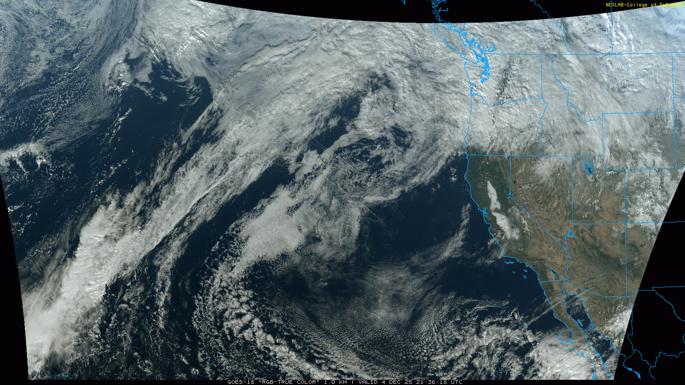
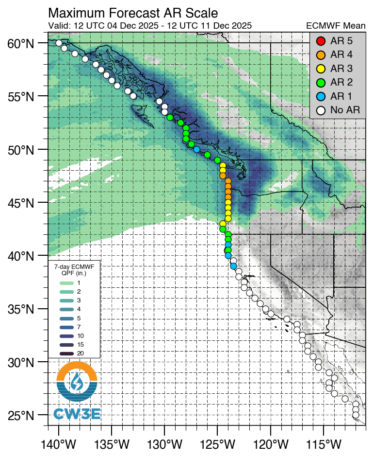

High Uncertainty, High Reward: This Weekend's Pattern Change May Finally Bring the Snow We've Been Waiting For
Welcome to The Dendritic Growth Zone!
🔮 Forecast Discussion
Short-term (Friday-Sunday)
After a frustrating start to our ski season, the atmospheric floodgates of the Northeastern Pacific Ocean are swinging wide open with a bullseye on the Washington Cascades. As of Thursday evening as I write, a massive ridge of high pressure is centered off the coast of California. This clockwise rotating behemoth as been pushing storms and subtropical moisture up and over to the North. This subtropical moisture brought widespread precipitation to the region Thursday. Starting Friday, this moisture phases with synoptic dynamics associated with an upper-level shortwave trough. In non-weather nerd speak, the moisture will start to overlap with an incoming storm which will provide more lift and therefore more precipitation! The Puget Sound Convergence Zone (PSCZ) will briefly bring high precipitation rates (>0.3"/hr) from Everett east, mainly targeting the Mountain Loop and potentially Stevens Pass.

Freezing Levels will start quite high near 7000-8000ft midday Friday before dropping to 4000-5000ft from Friday evening through early Sunday. A second upper-level shortwave trough of low pressure moves through in the early hours Saturday, peaking precipitation rates higher. Between Friday morning and Saturday, precipitation never really ends at most mountain locations, particularly north of US2. Temperatures east of the Cascade Crest are relatively warm (mid-30s F) so I don't anticipate much easterly flow funny business at the passes for this weekend.
Yet another shortwave trough moves through midday Sunday as it works its way around a larger longwave trough of low pressure spinning in the Gulf of Alaska. Precipitation may slow or stop very briefly sometime Sunday night before a giant awakens...

Medium-Term (Monday-Wednesday)
Next week, a scale 4 out of 5 atmospheric river sets its sights on Washington and lets loose a firehouse of subtropical moisture. With two precip rate peaks Monday and Wednesday, we're looking at 7-day precipitation totals exceeding 10 inches across much of the Washington Cascades. Of course, atmospheric river is french for "bad for skiing" in the local Washington dialect so this ARs high freezing levels likely won't bring much snow to low elevation trailheads. Points further north and at higher elevations though might be looking at a major storm cycle.
Number of the Week - 32.8 inches
32.8 inches is the 10-day snow total for Heather Meadows from the most pessimistic member from the 82 member Utah Snow Ensemble product (US Ensemble + Euro Ensemble + Cool math) from Jim Steenburgh's group the University of Utah. This is not the absolute worst case scenario BUT it's still not a bad cycle when the low end of the ensemble is nearing snorkel territory.
🚧👷Site Updates👷🚧!
Our dreams of snow are finally coming together as our team is hard at work improving our site.
We now have a feedback form at the bottom of our home page, let us know if there are any
cool weather data or tools you'd like to see on the site or if you have any other fun
weather questions. Perhaps in the future we can select 1 question per week to
write a blog about some storm or phenomenon of interest. This week we also started adding
info description toggles to some of the graphs and plots in
Model Tools.
However, there is still much to do! Next on the to do list is
developing a forecast evaluation page to track how different models perform over
the winter. We also have received some interest for stickers from folks, stay tuned on that front!
Thanks again for visiting!
❄️ Precipitation & Snowfall
Through 4am Saturday
- Mt. Baker: 14-22" (Heather Meadows)
- Stevens Pass: 6-14"
- Snoqualmie Pass: 0"
- Crystal: 2-6"
- Paradise: 6-14"
Through 4am Sunday
- Mt. Baker: 20-30" (Heather Meadows)
- Stevens Pass: 12-26"
- Snoqualmie Pass: 0-2"
- Crystal: 4-10"
- Paradise: 16-24"
Weekend Snow Accumulation (4pm Thursday through 4am Monday 1 Dec):
- Mt. Baker: 25-40"
- Stevens Pass: 16-30"
- Snoqualmie Pass: 0-4"
- Crystal: 6-14"
- Paradise: 18-26"
For what it's worth, there is tremendous uncertainty (and thus large ranges) in these snow totals. The issue is that freezing levels will be bouncing around our lower to mid elevation locations. A few hundred foot error in freezing level will be the difference between some decent snow accumulation and getting skunked by the rain 🙃. I do have high confidence that it will be wet though!
🧊 Freezing Level
- Saturday: 4000-4500 feet
- Saturday Night: 4000-4500 feet
- Sunday: 5000-6000 feet
The kicker for this cycle (and seemingly every storm cycle in the PNW) is uncertaintly in the freezing levels. There will definitely be a strong north-south freezing level gradient this weekend, particularly on Sunday Look for the Baker Backcountry freezing levels to run close to 1000ft lower than Paradise on Sunday.
🎿 Our Recommendations
Best Choice This Weekend: Baker Backcountry
Being further north will help the Baker Backcountry come out on top. Although not much of a base exists at the moment, 25-40" of new snow by Monday should build one and fast.
Runner-Up: Stevens Pass
Danny nailed the forecast last week highlighting Stevens as they now have one of the better bases (~8-14"). While not great on its own, combined with higher snow totals compared to its neighbors to the south (looking at you Snoqualmie Pass), Stevens Pass might end up skiing pretty darn well this weekend.